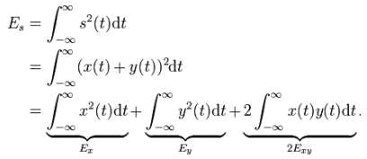

dcfAlways analysis and design ideas - page 1
The content of the digital message (0 or 1) sent from the receiver to the CPU will be searched using the famous correlation integral and cross correlation factor:

where the cross correlation factor ρ (rho) is defined as:
with ρ between 1 and -1
The whole process can be devided into four section:
during this step the digital signal coming into the processor from the receiver is queried on a 100 times per second base (y function) and stored into a 4-second ringbuffer. While the 4th second is read in, the first 3 seconds are checked thru a 0-1 mask (x function) and all the 100 Exy and Ey values are added into a 6´000 sec/100 minute-buffer as well the average ρ correlation factor. After the second is over, the ringbuffer is forwarded 1 position and the oldest second will be overwritten by the next one..... and so on. This is done during several minutes until the 0-1 position if found clearly. The δT will be found as the sec100 with the maximum correlation.
minimum Buffer requirement:
ringBuffer 4x100x1 bytes = 400 bytes to store digital function y value (0 or 1) per sec100
minuteBuffer 6´000 x (2x2 + (2 or 4)) = 24 to 32 kBytes bytes to store all Exy, Ey and rhoAVG in a 2 byte integer (probable rhoAvg as float ?). A multiple amount of memory is required when using TWA (time weighted average). So, sdram would be a good choise to store these big arrays.
For a step without TWA, the planned ATmega128 with 64 kB external memory should be ok, and at 8 Mhz, also the performance should be ok, since for the digital data Exy, Ey integral building will be rather trivial without any floating number functions. Often needed values should be stored in ATmega128 internal part of memory and the seldom used variables in external values for better performance.